Executive Summary
An evidence-backed launch-price decision-support tool for residential real estate in Amman. A builder picks a location and describes a unit; the platform recommends a defensible launch price band — Minimum-Safe / Recommended / Premium (JD/m²) with a confidence level — and, critically, shows why: every adjustment is backed by real market evidence with a traceable source chip. This is not a price-prediction black box — explainability is the product.
Where v1 stands: the structured database, collection scrapers, the full Decision Engine, the live API, and the interactive map dashboard are DONE and verified end-to-end. The listing pool grew ~29× (854 → 24,471) and all 9 of 9 tables are now populated — the four research-fed tables (6 competitor projects with launch prices, cost/land benchmarks, 14 infrastructure/policy/qualitative evidence items, 5 neighborhood profiles) have loaded. On the richer pool the engine re-ran and confidence rose (Abdoun M→H 0.76, Shmeisani →H 0.70, Khalda H 0.77) with premiums now grounded in real comps instead of defaulting to the income ceiling. Three official sources remain BLOCKED (geo-blocked from outside Jordan) with labelled fallbacks in place; construction-cost JD/m² stays a documented gap.
Current Progress
Progress by workstream. Percentages reflect v1 acceptance scope (the 8-step end-to-end workflow), not the full Phase-2 roadmap.
Official macro at 80%: CBJ price index and DoS permits are loaded; the CBJ index is stale at 2021-Q3 and DLS transaction volume is geo-blocked (news-sourced fallback only). Deep-research tables (projects, cost/land benchmarks, evidence items, neighborhood profiles) have now loaded via the R1–R7 relay.
Current Metrics
System Architecture
The full pipeline is a one-way flow. Business logic lives only in the Decision Engine — never in the frontend, never in the database.
Collection layer
Re-runnable Python scrapers turn raw sources into schema-clean CSV/GeoJSON. Plain HTTP + embedded-JSON parsing (no Playwright needed for the portals). Every output matches the frozen schema.
Storage layer
One SQLite database (db/jordan_re.sqlite), 9 collected tables + 2 engine-output tables.
Every row carries provenance columns. Idempotent loaders — re-running is always safe.
Reasoning layer
Pure-Python engine (stdlib only). Loads DB rows into a DataBundle, derives premiums from data,
reconciles three approaches, scores confidence, emits a JSON contract the frontend renders verbatim.
Data Pipeline
Two pipelines that are never mixed: Current State (what is — feeds today's valuation grid)
and Future Signals (what's coming — feeds the appreciation narrative). Evidence objects carry a
category tag so the UI keeps them in distinct panels.
| Stage | What happens | Artifacts | Status |
|---|---|---|---|
| Collect | Scrape portals (embedded JSON), pull OSM via Overpass, download official Excel/PxWeb | scrapers/*.py → data/raw/ | DONE |
| Clean | Normalize to frozen 33-col listings schema; enrich detail pages; outlier flags kept raw | data/processed/*.csv | DONE |
| Load | Idempotent CSV/GeoJSON loaders; reconciliation decisions logged, no silent dedup | db/load_csv.py · load_geojson.py | DONE |
| Feature-engineer | price/m², medians, derived attribute premiums, distance-to-POI, yield, time factor | app/engine/adjustment.py · stats.py | DONE |
| Reason | Comparable selection → adjustment → evidence → confidence → recommendation | app/engine/ (5 modules) | DONE |
| Serve | FastAPI validates input, builds a Subject, returns RecommendationResult verbatim | app/api/main.py | DONE |
| Render | Map + subject form + adjustment waterfall + evidence/comps/risk panels | app/web/ (React + MapLibre) | DONE |
| Research-feed | Deep-research CSVs → projects, cost_benchmarks, evidence_items, neighborhood_profiles | data/raw/research/ (incoming) | PENDING |
window.state (Algolia),
OpenSooq in __NEXT_DATA__. Plain HTTP + stdlib parsing is faster, re-runnable, and more reliable;
headless Chromium actually trips OpenSooq bot-detection and returns a degraded page.Database & Provenance Model
One SQLite database is the foundation — the platform is built on top of it, never before it. Every table carries provenance columns so any number on the dashboard traces back to its source.
Universal provenance columns (on every collected row)
source_namesource_urlcapture_date collected_byconfidence (H/M/L)notes evidence_categorylanguage (en/ar/mixed)
Collection confidence = trust in the source only. Evidence-level confidence
(does it move price, and by how much) is computed later by the Evidence Engine — never mixed with collection confidence.
| Table | Rows | Provenance / source | Status |
|---|---|---|---|
listings | 24,471 | Bayut 23,521 + Property4321 696 + OpenSooq 254; 24,217 geocoded; each row links its listing URL + capture date | DONE |
poi | 984 | OpenStreetMap via Overpass; confidence M (community) | DONE |
districts | 5 | OSM place nodes → approximate circles (real OSM neighborhood polygons absent) | DONE |
macro_series | 1,927 | CBJ price index 1,377 (H) + DoS permits 540 (H) + DLS transactions 10 (L, news-sourced) | DONE |
zoning_plots | 2,244 | UNOFFICIAL OSM landuse, not GAM regulatory zoning; no zone_class/FAR/height; confidence L | FALLBACK |
projects | 6 | Real competitor new-launch projects with launch prices, unit mix, payment plans — deep-research loaded | DONE |
evidence_items | 14 | BRT Lines 1&2, policy incentives, qualitative view/noise/calm-area facts — deep-research loaded | DONE |
neighborhood_profiles | 5 | Qualitative area character for all 5 target submarkets — deep-research loaded | DONE |
cost_benchmarks | 10 | Land-price benchmarks added; construction-cost JD/m² still a documented gap (no open source) | PARTIAL |
Engine-output tables (intentionally empty — populated at run time): derived_premiums, recommendations | |||
Not a schema gap: roads.geojson (2,558 LineStrings) has no table — it is consumed directly
as a GeoJSON map layer by the frontend.
Evidence Engine
The heart of explainability. Every pricing adjustment is a structured evidence object; the recommendation is a base value plus an ordered list of evidence objects → range + confidence. Nothing appears in the UI without one.
Evidence object shape
{
"factor": "Finish quality (high)",
"adjustment": "+0.9%",
"confidence": "Medium",
"method": "paired median differential (n=7)",
"datasets": ["listings"],
"sources": [{ "name": "OpenSooq",
"url": "https://jo.opensooq.com/...",
"capture_date": "2026-07-07" }],
"category": "current_state | future_signal",
"explanation": "Comparable units with high
finish list 0.9% above matched units..."
}
How it renders
- Each object is one row of the adjustment waterfall with a magnitude bar and inline source chips.
categorysplits the Current-State and Future-Signals panels.- Absolute cross-checks (cost floor, income ceiling) render in a distinct "TRIANGULATION — not additive" block, never cascaded into a running total.
- A non-priced context row (e.g. "83% agent-listed") renders muted and tagged CONTEXT — market texture, explicitly not a price adjustment.
Pipeline: Recommended Price ← reconciliation ← [evidence objects] ← features ← datasets ← sources
Decision Engine — 5 Sub-Engines
Pure Python, standard library only. Hard rule: not one hardcoded attribute premium exists in the engine — every premium is derived from current market data and re-derived on every run. Two guardrail tests enforce this automatically (runtime check + source scan).
1 · Comparable Analysis
Selects same-submarket / same-type sale comps, relaxes the size band when thin, ranks by similarity (recency, proximity, fewer adjustments = more weight).
2 · Adjustment
Derives premiums: categorical (view/parking/finish) via paired median differential; continuous (floor/age/size) via OLS slope residualised by finish; time via the CBJ index. Capped & additive (±40% net).
3 · Evidence
Wraps every applied lever + context factor as a structured evidence object with method, sources, and category.
4 · Confidence
Scores five inputs (density, dispersion, recency, cross-method agreement, source quality) → numeric 0–1 → H/M/L, plus a data-driven interval (4–35% half-width). Thin markets get an uncertainty floor.
5 · Recommendation
Reconciles sales-comparison anchor + cost floor + income ceiling → Minimum-Safe / Recommended / Premium + narrative + risk factors + alternative scenarios.
Reconciliation
Sales comparison is the spine; asking→transaction gap (5–15%, client PDF) applied at midpoint; cost floor sets
min_safe; income ceiling caps premium. Convergence raises confidence, divergence becomes a surfaced risk.
Final output — re-emitted post-dedup, representative apartment
| Neighborhood | Min-safe | Recommended | Premium | Confidence | Sale comps |
|---|---|---|---|---|---|
| Abdoun | 650 | 991 | 1,333 | H · 0.76 | 917 |
| Dabouq | 596 | 840 | 1,084 | M · 0.68 | 1,066 |
| Sweifieh | 534 | 821 | 1,108 | M · 0.69 | 984 |
| Khalda | 522 | 634 | 746 | H · 0.77 | 1,086 |
| Shmeisani | 332 | 511 | 690 | H · 0.70 | 177 |
All values in JD/m²; every band is finite and ordered, and every value traces to real listing IDs with source URLs. Sale comps are the engine's usable apartment-sale pool per submarket (~10× the earlier 854-listing snapshot). A near-duplicate comp dedup (collapsed 422 cross-posted listings across the covered submarkets, conservative 1% rule) tightened Dabouq's dispersion (confidence 0.65 → 0.68) and refined Shmeisani and Abdoun; Sweifieh and Khalda were unchanged (their top comps were already distinct). With real comp depth, premiums are now grounded in comparable listings rather than defaulting to the income ceiling — e.g. Abdoun's premium compressed from 1,540 → 1,333 JD/m². New evidence factors now appear in the waterfall: Competitive positioning (from the 6 projects), Market composition (context), and Future Signals (BRT Lines 1&2, area premium drivers). Remaining data-gap caveats (construction cost, per-listing view) stay surfaced as risk factors.
Current Status — Honest Snapshot
DONE What works end-to-end
- Listings pipeline — 24,471 real asking-price listings (24,217 geocoded), re-runnable scrapers
- All 9 tables populated — incl. 6 projects, 14 evidence items, 5 profiles, 10 cost/land benchmarks
- Map data — 984 POIs, 5 districts, 2,558 roads, land-use backdrop
- Decision Engine — 5 sub-engines, 16/16 tests, re-run on the richer pool; confidence rose
- Live API —
/health,/neighborhoods,/recommend,/comparables - Interactive dashboard — map click, subject form, waterfall, comps, light/dark theme + in-app Help panel, offline fallback
REMAINING What is honestly incomplete
- Construction cost JD/m² — no open Jordan source; land-price benchmarks stand in for the cost-approach floor (documented gap)
- Per-listing view / parking — portals do not expose them (~0% / 38%); routed to Phase-2 AI-vision + neighborhood-level facts (now in evidence_items)
- CBJ index stale — ends 2021-Q3; time-adjustment disabled (never extrapolated) beyond coverage
- Official zoning — GAM geo-blocked; OSM landuse used as a labelled placeholder (no FAR/height)
- DLS transaction volume — geo-blocked; only national news-sourced trend rows (confidence L)
Completed Work
| Deliverable | Detail | Evidence |
|---|---|---|
| Portal scrapers | Bayut + OpenSooq, plain HTTP embedded-JSON; detail-page enrichment pass for sale rows | scrape-report-20260707.md |
| GIS extraction | 984 POIs (7 categories), 5 district circles, 2,558 roads via Overpass (pure-Python geometry) | gis-report-20260707.md |
| Official data | CBJ REPI (14 indicators, 12 governorates), DoS permits (PxWeb API, to 2026-Q1) | official-data-report.md |
| Database integration | 5 passes; reconciliation decisions logged; 0 duplicate (indicator, geography, period) tuples verified | integration-report.md |
| Decision Engine | 5 sub-engines, no-hardcoded-weights guardrails, 16/16 requirement-driven tests | engine-report.md |
| Live API | FastAPI; engine-parity verified; CORS; {detail} error contract; input-sensitivity checked | api-report.md |
| Frontend dashboard | React + MapLibre; live/offline; light + dark theme; in-app Help panel; fixed a critical map-render bug (glyph-CDN crash dropped all polygon layers) | frontend-report.md |
| Data + research load | Listings 854 → 24,471 (multi-portal); all 4 research tables loaded → 9/9 populated; 94-source master inventory | master-source-inventory.csv |
Pending Work
| Item | Blocks | Owner | Status |
|---|---|---|---|
| Construction cost JD/m² by spec class | True cost-approach floor (land benchmarks stand in for now) | Junior + Perplexity | GAP — no open source |
| Per-listing view / parking | Categorical view/parking premiums | Phase-2 AI-vision | ROADMAP |
| Official GAM zoning (zone_class/FAR) | Regulatory reasoning (currently landuse-only) | Claude (needs Jordan VPN) | BLOCKED |
| DLS transaction volume | Demand-velocity signal (P1/roadmap) | Claude (needs Jordan VPN) | BLOCKED |
| CBJ index refresh (post 2021-Q3) | Current time-adjustment factor | Claude (needs Jordan VPN) | BLOCKED |
The four deep-research tables (projects, cost/land benchmarks, evidence items, neighborhood profiles) have loaded through the R1–R7 relay and now feed the engine. What remains is the construction-cost gap (no open Jordan source), Phase-2 per-listing view/parking, and the three geo-blocked official sources (need a Jordan connection / VPN).
Research Status
Datasets that scraping cannot reach are filled by citation-backed AI deep research into the frozen schema. Status below reflects the load into the database as of this snapshot.
| Research track | Target table | Method | Rows loaded | Status |
|---|---|---|---|---|
| Competitor new-launch projects | projects | Developer sites, Bayut new-projects, FB pages | 6 | LOADED |
| Cost / land benchmarks | cost_benchmarks | Land-price benchmarks cited; construction cost still a gap | 10 | PARTIAL |
| Infrastructure / policy / news | evidence_items | BRT Lines 1&2, policy incentives, view/noise/calm facts (URL + date) | 14 | LOADED |
| Neighborhood qualitative profiles | neighborhood_profiles | Gemini deep-research synthesis, all 5 submarkets | 5 | LOADED |
Collected Datasets
POIs by category (984)
Comp depth by submarket (engine sale pool)
| Submarket | Sale comps | POI | Confidence |
|---|---|---|---|
| Khalda | 1,086 | 40 | H 0.77 |
| Dabouq | 1,066 | 12 | M 0.68 |
| Sweifieh | 984 | 41 | M 0.69 |
| Abdoun | 917 | 37 | H 0.76 |
| Shmeisani | 177 | 64 | H 0.70 |
Sale comps = the engine's usable apartment-sale pool (~10× the earlier 854-listing snapshot). Dabouq's thin POI count (12) still weakens its distance features; Shmeisani's thinner comp pool is the smallest but now reaches High confidence.
Roads (2,558)
Macro series (1,927)
CBJ 2005→2021-Q3 (H) · DoS 2019→2024 annual (H) · DLS national news-sourced (L).
Land use (2,244)
Unofficial OSM landuse (labelled) — no zone_class/FAR/height.
Source Inventory
Every row in the database stores its own source_url + capture_date. The full master list is
docs/master-source-inventory.csv — 94 deduped sources across portals, official statistics, GIS, and cited research.
Summary of where every number comes from:
| Data | Source | Authenticity | Status |
|---|---|---|---|
| Property listings (24,471, asking prices) | Bayut Jordan · Property4321 · OpenSooq Jordan | Market / asking | Real |
| Competitor projects (6) · evidence items (14) · profiles (5) | Developer sites, gov announcements (BRT), Gemini/Perplexity research | Cited | Loaded |
| POIs (984), districts (5), roads (2,558) | OpenStreetMap (Overpass) | Community | Real |
| Real-estate price index (2005→2021-Q3) | Central Bank of Jordan | Official | Real · stale 2021-Q3 |
| Building permits (supply, to 2024) | Dept. of Statistics (PxWeb) | Official | Real |
| Land-use polygons (zoning backdrop) | OpenStreetMap land-use (ArcGIS mirror) | Unofficial proxy | Fallback (labelled) |
| DLS transaction totals (national) | News citing DLS (Zawya, Jordan News) | Low, per-row article URL | Fallback (labelled) |
| Official DLS transactions (unit-level) | dls.gov.jo | Official | Geo-blocked |
| Official GAM zoning + FAR | ammancitygis.gov.jo ArcGIS | Official | Geo-blocked |
| CBJ index post-2021-Q3 | statisticaldb.cbj.gov.jo | Official | Geo-blocked |
Data Quality
Attribute fill rates across the listing pool (post detail-enrichment). Core pricing fields are strong; secondary attributes the portals do not expose stay honestly low and drive documented limitations even at 24,471 listings — volume does not create attributes the source never published.
Listing attribute fill rate (enrichment sample)
Known data gaps
- view unavailable (~0%) — neither portal exposes orientation as a structured field; OpenSooq's closest is compass facade. Routed to Phase-2 AI-vision + R7 neighborhood-level research. Never fabricated.
- total_floors 0% — not exposed by either portal; floor premium uses absolute floor_level.
- OpenSooq (254) has no coordinates — loaded with NULL coords; distance-to-POI similarity skipped for them (handled, no error). All 600 Bayut rows have lat/lng.
- CBJ price index ends 2021-Q3 — a genuine source limit; time-adjustment disabled beyond coverage rather than extrapolated.
- 55 listings price < 1,000 JD — placeholder/on-request noise kept raw; the engine's outlier filter (log-space MAD + plausibility floor) handles them.
Rates shown are from the detail-enrichment sample (the original 854-listing pass); pool-wide rates across the newly ingested multi-portal bundle (23,617 rows) are being re-measured. The pattern holds regardless of pool size — view/total_floors are absent because the portals never publish them, so volume cannot fill them. Enrichment continues; a re-run lifts waterfall coverage as attributes land.
Known Limitations & Blocked Sources
- dls.gov.jo — official DLS unit-level transactions (all 4 host variants timed out). Fallback: 10 national news-sourced trend rows, confidence L.
- ammancitygis.gov.jo — official GAM regulatory zoning + FAR. Named ArcGIS mirrors are token-gated (499). Fallback: OSM landuse polygons, labelled unofficial, no zone_class/FAR/height.
- statisticaldb.cbj.gov.jo — CBJ index past 2021-Q3. Main CBJ site works but its one Excel stops at 2021-Q3.
- data.gov.jo — Jordan open-data portal, connection refused.
Screenshots — Verified Evidence
Captured from the live app running against the real API (earlier snapshot; the database has since grown to 24,471 listings). Both light and dark themes are shipped (the dashboard defaults to a high-contrast look and respects the viewer's preference).
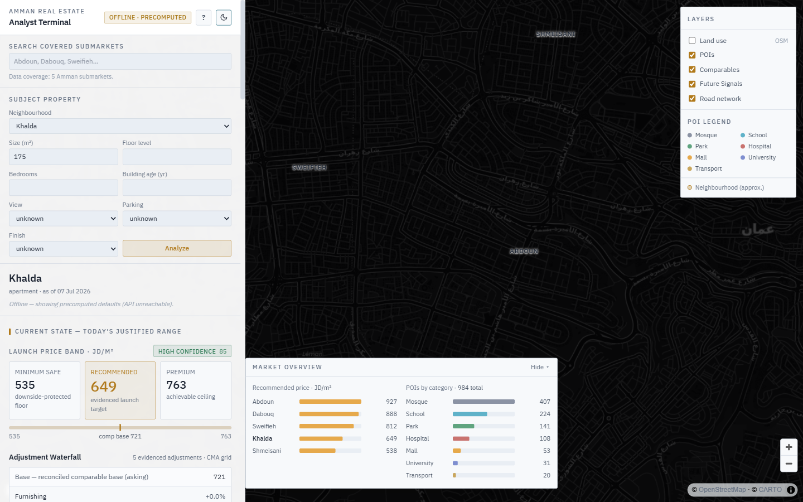
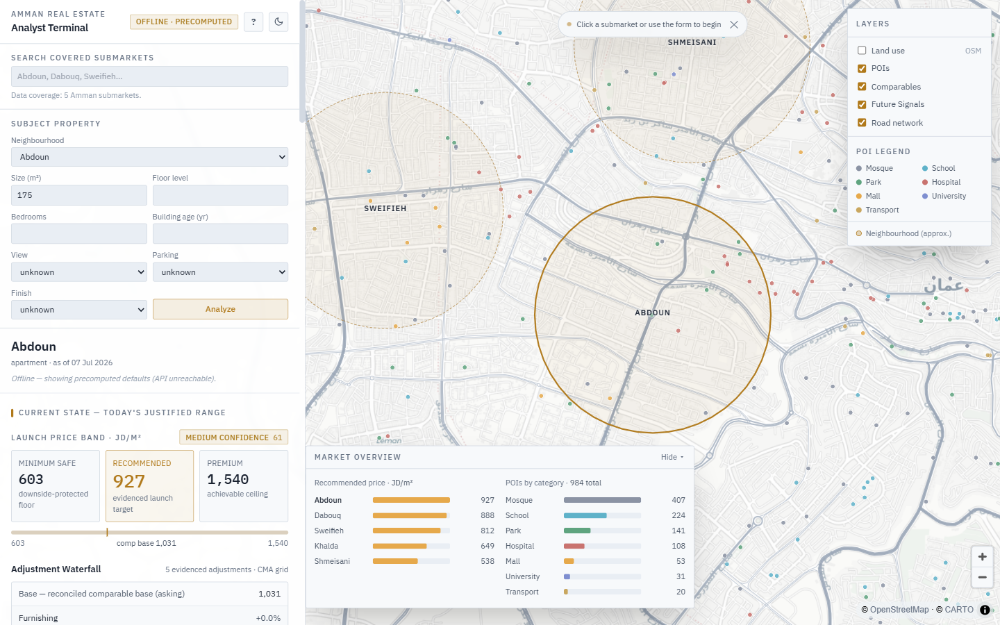
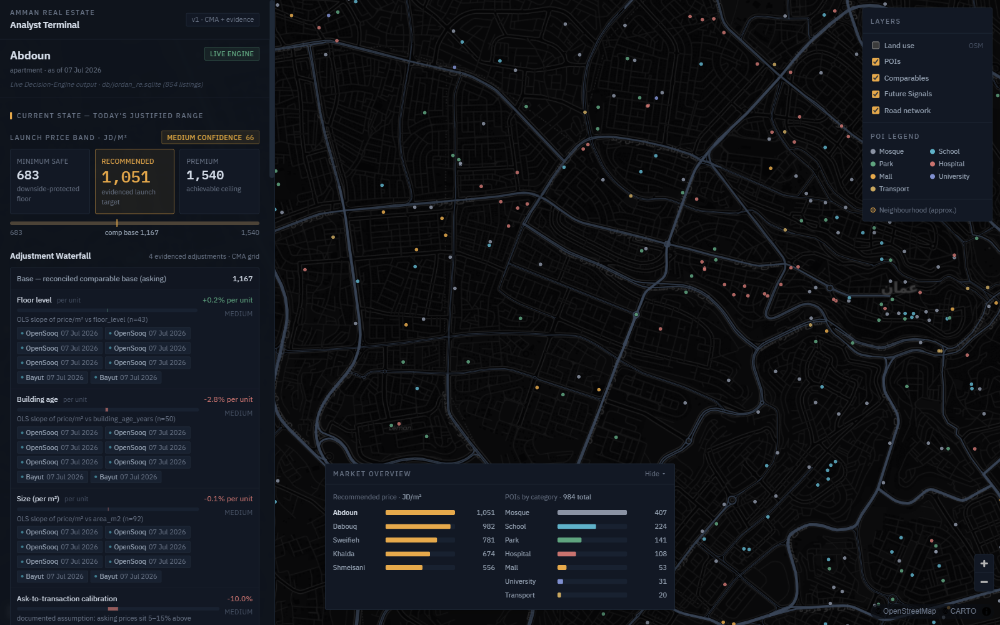
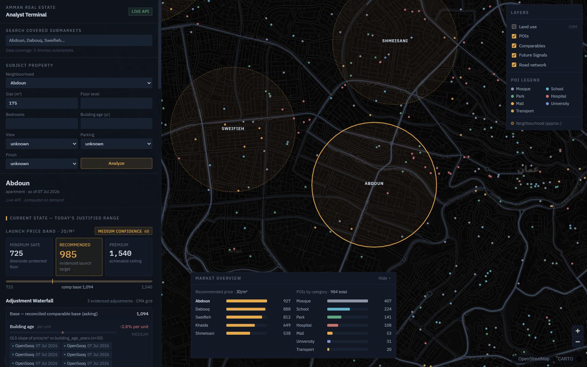
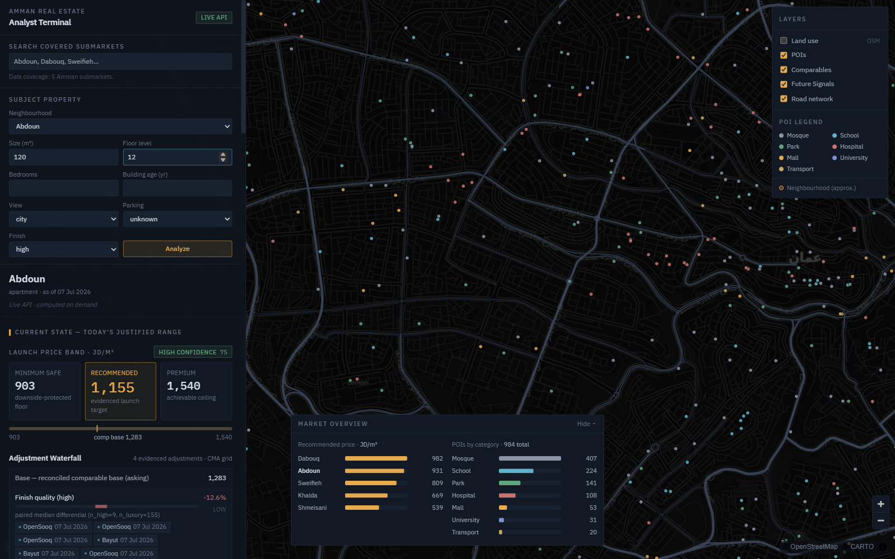
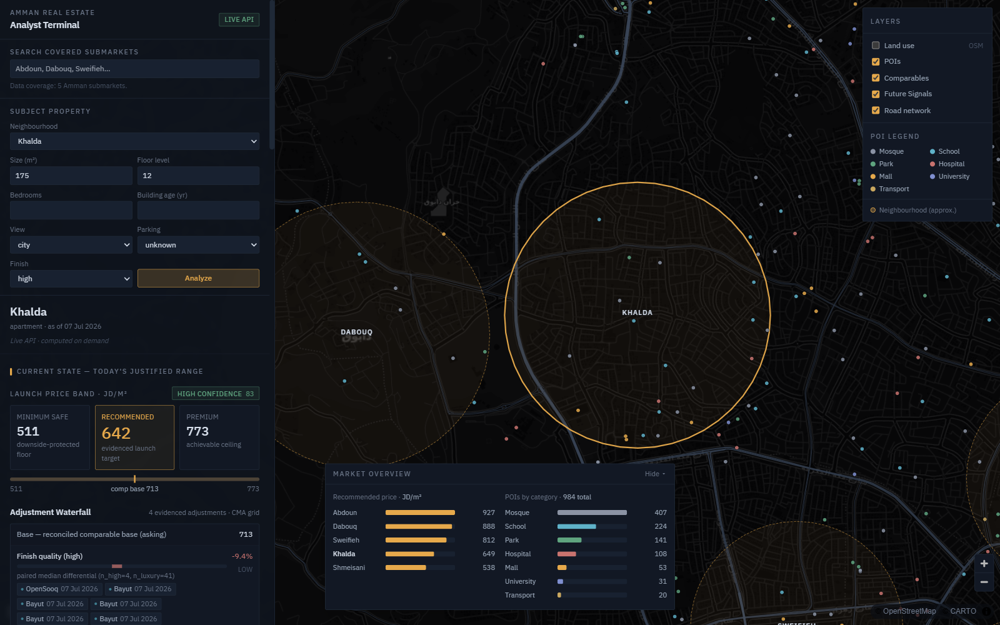
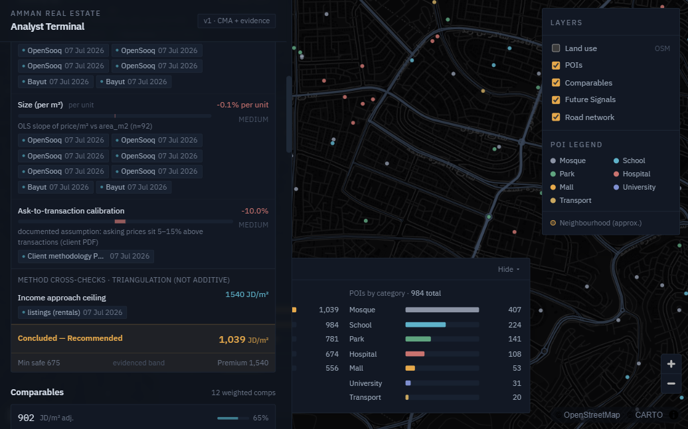
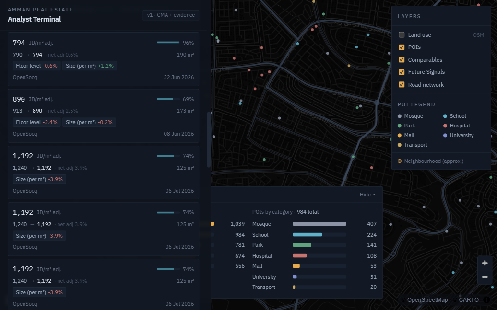
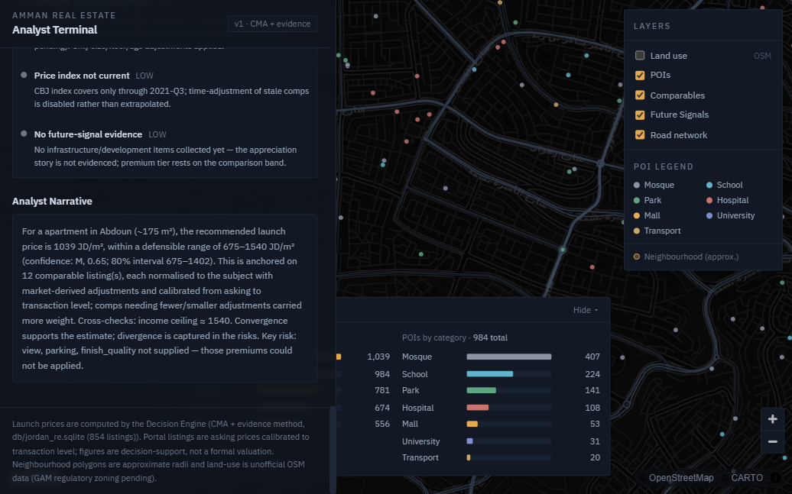
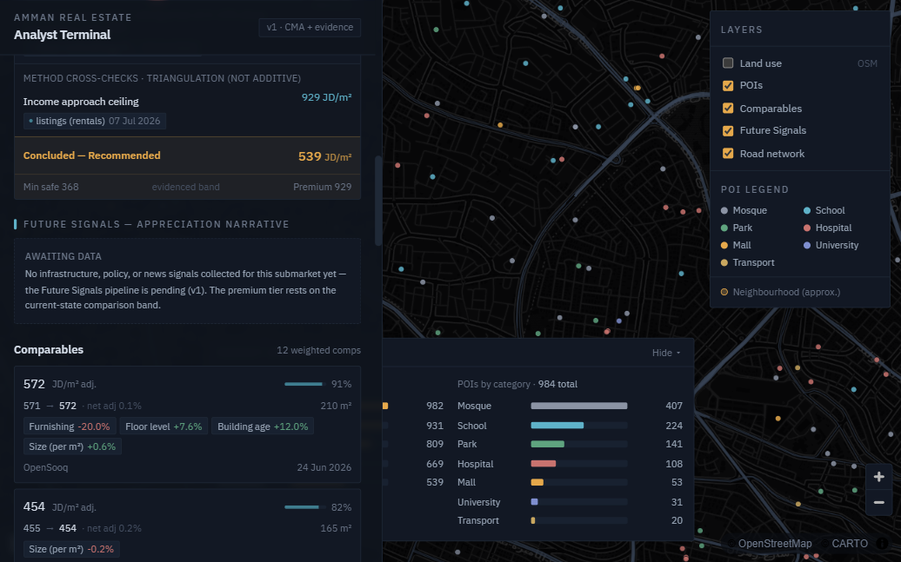
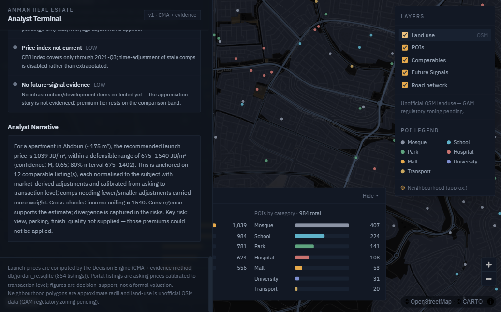
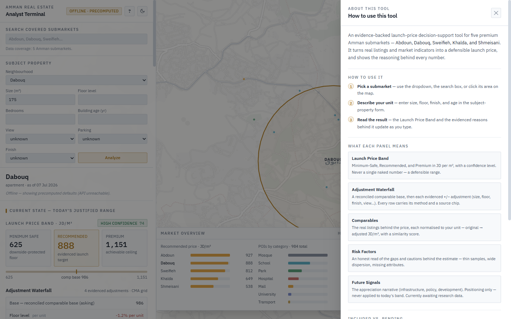
Roadmap
Near-term (v1 completion)
- Ingest the R1–R7 deep-research CSVs → cost floor, competitor cross-check, future-signal story, qualitative "why"
- Refresh this dashboard on load
- Continue listing attribute enrichment
Blocked-source recovery
- Pull geo-blocked official sources (CBJ recent quarters, DLS transactions, GAM zoning + FAR) from a Jordan connection / VPN
- Swap OSM landuse for real GAM regulatory zoning when reachable
Phase 2
- Hedonic / ML pricing once ≥300–500 clean records exist
- AI-vision view/finish estimation from listing photos
- Travel-time matrix (routing API); residual land-value calculator
- Expand beyond the 5 submarkets
Version History
| Milestone | Date | What shipped |
|---|---|---|
| Collection complete (initial) | 2026-07-07 | Portal scrapes (initial 854), GIS (984 POIs / 2,558 roads), official macro (CBJ + DoS), zoning fallback |
| DB integration passes #1–5 | 2026-07-07 | 5 tables populated; macro reconciled & clean-rebuilt to 1,927 rows; enrichment upserts |
| Decision Engine v1 | 2026-07-07 | 5 sub-engines, 16/16 tests, live on the real DB, per-neighborhood outputs |
| Live API | 2026-07-07 | FastAPI wrapping the engine; engine-parity verified |
| Interactive frontend | 2026-07-07 | Live/offline dashboard; critical map-render bug fixed; light + dark themes |
| This dashboard (v1) | 2026-07-07 | Engineering documentation dashboard (this file) |
| Data + research load | 2026-07-07 | Listings 854 → 24,471; all 9 tables populated; engine re-run (confidence rose); frontend light/dark + Help panel |
| This dashboard refresh | 2026-07-07 | Numbers refreshed to the enriched dataset; ready for the next GitHub push |
Team Responsibilities
| Role | Owner | Responsibility |
|---|---|---|
| Project Lead | Repo owner (user) | Final decision on any disagreement; deliverable definition |
| Technical Lead | Claude Code | All execution — scrapers, GIS/official pulls, database, engine, API, frontend, verification |
| Solution / Design Reviewer | ChatGPT | Business-alignment review, methodology & adjustment-grid design, roadmap, risk register, quality gate |
| Research team | Gemini · Perplexity | Citation-backed discovery — competitor projects, costs, infrastructure news, source verification |
| Data collection | Junior | Runs handed prompts, outputs into the frozen-schema CSVs |